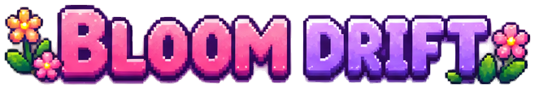
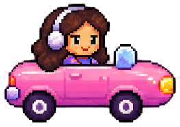
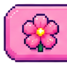
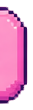

Lab · in review
Anna
Guercio
Product Designer com foco em interfaces e sistemas visuais. Este espaço reúne experimentos, processos e peças do meu portfólio.
Experiment 01

Dirija, colete flores e acelere! 🌸


0
Clique na pista e use ou · toque no celular